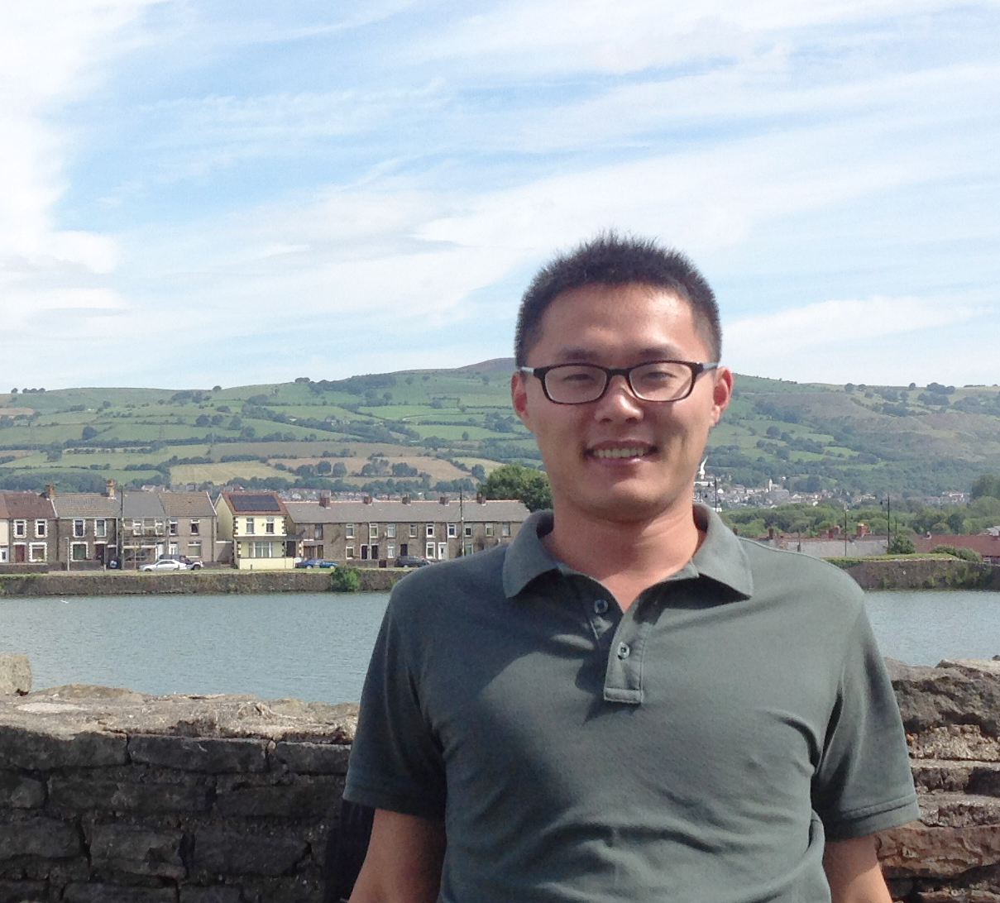

I am currently an Assistant Professor at National Laboratory of Pattern Recognition(NLPR), Institute of Automation, Chinese Academy of Sciences (CASIA). I also earned my Ph.D in computer science in 2016 from NLPR, CASIA, advised by Prof. Xiaopeng Zhang and Assoc. Prof. Dong-Ming Yan.
I received my bachelor degree from Shandong University in 2011. From Apr. 2014 to Feb. 2015, I was a Visiting Scholar PhD Student at Visual Computing Research Center, SIAT. From Apr. 2015 to Feb. 2016, I visited the Computer Graphics and Media Design Group at University of Konstanz, directed by Prof. Oliver Deussen.
Welcome to take a look at my CV.
Computer graphics, including geometric processing, 3D shape analysis, and point-cloud-based plant modeling.